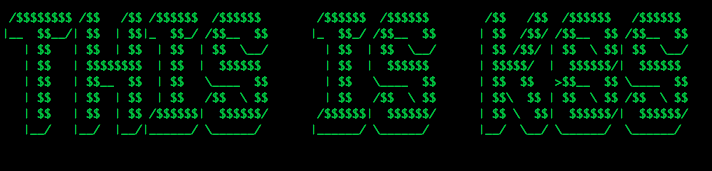
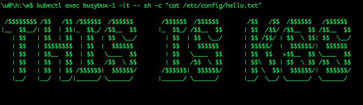

本文译自 Building a Kubernetes Mutating Admission Webhook。
当你在 Kubernetes 中创建 Pod 的时候，是否注意到在容器的 /var/run/secrets/kubernetes.io/serviceaccount/token 路径上存放了一个用于认证的 token 文件？你可以通过如下命令，在 Kubernetes 集群中验证下：
$ kubectl run busybox --image=busybox --restart=Never -it --rm -- ls -l /var/run/secrets/kubernetes.io/serviceaccount/token
# output
/var/run/secrets/kubernetes.io/serviceaccount/token
注：在 Kubernetes 1.6 以上的版本，你可以 取消 这一个自动注入的功能。
现在假设有这样一个场景，需要添加一个 “hello.txt” 文件到所有（或某组）pod 的容器文件系统内，不能通过在 pod spec 中显式指定 volumeMount 的方式，我们有没有什么方法达到目的呢？
为了让实验更具趣味性，我们用一个 ASCII “小作品”（用这个工具生成的）来作为我们的 “hello.txt” 文件：

何为 Admission Webhook
实现该注入的功能的方式之一，就是我们上文中提到的，使用 Kubernetes Admission Webhooks。这是何方神圣？来看下官方文档给的定义：
Admission webhook 是一种用于接收准入请求并对其进行处理的 HTTP 回调机制。 可以定义两种类型的 admission webhook，即 validating admission webhook 和 mutating admission webhook。 Mutating admission webhook 会先被调用。它们可以更改发送到 API 服务器的对象以执行自定义的设置默认值操作。
下文这张借用自 Kubernetes.io blog post 的流程图可以帮助我们理解 Admission Webhook 的概念。

接下来，本文将采用 Kubernetes 提供的 Mutating Admission Webhook 这一机制，来实现注入 “hello.txt” 文件到 Pod 容器中，我们每次发送请求调用 API 创建 Pod 的时候，Pod 的 spec 信息会被先修改，再存储。如此一来，工作节点上的 Kublet 创建 Pod 的时候，将会预置 “hello.txt” 文件。文件的创建流程是全自动的。一起来试试！
创建 Admission Webhook
笔者已经把下文提到的代码和命令都上传到了 github 仓库。读者可以跟着边看边操作。
首先需要有一个正常运行的 Kubernetes 集群。读者可以通过 Kind 快速起一个集群。
接着，定义一个包含了 “hello.txt” 文件内容的 ConfigMap：
apiVersion: v1
kind: ConfigMap
metadata:
name: hello-configmap
data:
hello.txt: "\n /$$$$$$$$ /$$ /$$ /$$$$$$ /$$$$$$ /$$$$$$ /$$$$$$ /$$
\ /$$ /$$$$$$ /$$$$$$ \n|__ $$__/| $$ | $$|_ $$_/ /$$__ $$ |_ $$_/
/$$__ $$ | $$ /$$/ /$$__ $$ /$$__ $$\n | $$ | $$ | $$ | $$ | $$
\ \\__/ | $$ | $$ \\__/ | $$ /$$/ | $$ \\ $$| $$ \\__/\n | $$
\ | $$$$$$$$ | $$ | $$$$$$ | $$ | $$$$$$ | $$$$$/ | $$$$$$/|
\ $$$$$$ \n | $$ | $$__ $$ | $$ \\____ $$ | $$ \\____ $$ |
$$ $$ >$$__ $$ \\____ $$\n | $$ | $$ | $$ | $$ /$$ \\ $$ |
$$ /$$ \\ $$ | $$\\ $$ | $$ \\ $$ /$$ \\ $$\n | $$ | $$ | $$ /$$$$$$|
\ $$$$$$/ /$$$$$$| $$$$$$/ | $$ \\ $$| $$$$$$/| $$$$$$/\n |__/
\ |__/ |__/|______/ \\______/ |______/ \\______/ |__/ \\__/ \\______/
\ \\______/ \n \n
\ \n
\ \n"
为了构建 webhook，我们写一个简洁的 Go API 服务端。http handler 是实现 webhook 代码的最重要部分：
func (app *App) HandleMutate(w http.ResponseWriter, r *http.Request) {
admissionReview := &admissionv1.AdmissionReview{}
// read the AdmissionReview from the request json body
err := readJSON(r, admissionReview)
if err != nil {
app.HandleError(w, r, err)
return
}
// unmarshal the pod from the AdmissionRequest
pod := &corev1.Pod{}
if err := json.Unmarshal(admissionReview.Request.Object.Raw, pod); err != nil {
app.HandleError(w, r, fmt.Errorf("unmarshal to pod: %v", err))
return
}
// add the volume to the pod
pod.Spec.Volumes = append(pod.Spec.Volumes, corev1.Volume{
Name: "hello-volume",
VolumeSource: corev1.VolumeSource{
ConfigMap: &corev1.ConfigMapVolumeSource{
LocalObjectReference: corev1.LocalObjectReference{
Name: "hello-configmap",
},
},
},
})
// add volume mount to all containers in the pod
for i := 0; i < len(pod.Spec.Containers); i++ {
pod.Spec.Containers[i].VolumeMounts = append(pod.Spec.Containers[i].VolumeMounts, corev1.VolumeMount{
Name: "hello-volume",
MountPath: "/etc/config",
})
}
containersBytes, err := json.Marshal(&pod.Spec.Containers)
if err != nil {
app.HandleError(w, r, fmt.Errorf("marshall containers: %v", err))
return
}
volumesBytes, err := json.Marshal(&pod.Spec.Volumes)
if err != nil {
app.HandleError(w, r, fmt.Errorf("marshall volumes: %v", err))
return
}
// build json patch
patch := []JSONPatchEntry{
JSONPatchEntry{
OP: "add",
Path: "/metadata/labels/hello-added",
Value: []byte(`"OK"`),
},
JSONPatchEntry{
OP: "replace",
Path: "/spec/containers",
Value: containersBytes,
},
JSONPatchEntry{
OP: "replace",
Path: "/spec/volumes",
Value: volumesBytes,
},
}
patchBytes, err := json.Marshal(&patch)
if err != nil {
app.HandleError(w, r, fmt.Errorf("marshall jsonpatch: %v", err))
return
}
patchType := admissionv1.PatchTypeJSONPatch
// build admission response
admissionResponse := &admissionv1.AdmissionResponse{
UID: admissionReview.Request.UID,
Allowed: true,
Patch: patchBytes,
PatchType: &patchType,
}
respAdmissionReview := &admissionv1.AdmissionReview{
TypeMeta: metav1.TypeMeta{
Kind: "AdmissionReview",
APIVersion: "admission.k8s.io/v1",
},
Response: admissionResponse,
}
jsonOk(w, &respAdmissionReview)
}
上面这部分代码，和 Kubernetes 内部代码有诸多类似，都使用了 源自 https://github.com/kubernetes/api 和 https://github.com/kubernetes/apimachinery 的 schema 类型。上述代码主要做了如下事情：
- 将来自 Http 请求中的 AdmissionReview json 输入反序列化。
- 读取 Pod 的 spec 信息。
- 将 hello-configmap 作为数据源，添加 hello-volume 卷到 Pod。
- 挂载卷至 Pod 容器中。
- 以 JSON PATCH 的形式记录变更信息，包括卷的变更，卷挂载信息的变更。顺道为容器添加一个 “hello-added=true” 的标签。
- 构建 json 格式的响应结果，结果中包含了这次请求中的被修改的部分。
笔者 此处 还为这个 handler 编写了单元/功能测试，以确保它的功能实现符合我们的预期。
加点改进：TLS
Webhook API 服务器需要通过 TLS 方式通信。如果想将其部署至 Kubernetes 集群内，我们还需要证书。笔者通过 New Relic 这个软件来生成 Webhook 证书。笔者创建了一个 个人分支，对代码做了点改动，以确保其可以 Job 方式部署：
apiVersion: batch/v1
kind: Job
metadata:
name: webhook-cert-setup
spec:
template:
spec:
serviceAccountName: webhook-cert-sa
containers:
- name: webhook-cert-setup
# This is a minimal kubectl image based on Alpine Linux that signs certificates using the k8s extension api server
image: quay.io/didil/k8s-webhook-cert-manager:0.13.19-1-a
command: ["./generate_certificate.sh"]
args:
- "--service"
- "hello-webhook-service"
- "--webhook"
- "hello-webhook.leclouddev.com"
- "--secret"
- "hello-tls-secret"
- "--namespace"
- "default"
restartPolicy: OnFailure
backoffLimit: 3
其他 YAML
完成 webhook API 服务端的镜像构建后，将其推送至镜像仓库，并将其作为一个 Deployment 部署到集群。
apiVersion: apps/v1
kind: Deployment
metadata:
name: hello-webhook-deployment
labels:
app: hello-webhook
spec:
replicas: 1
selector:
matchLabels:
app: hello-webhook
template:
metadata:
labels:
app: hello-webhook
spec:
containers:
- name: hello-webhook
image: CONTAINER_IMAGE
ports:
- containerPort: 8000
volumeMounts:
- name: hello-tls-secret
mountPath: "/tls"
readOnly: true
resources:
limits:
memory: "128Mi"
cpu: "500m"
volumes:
- name: hello-tls-secret
secret:
secretName: hello-tls-secret
然后是一个 ClusterIP 类型的 Service：
apiVersion: v1
kind: Service
metadata:
name: hello-webhook-service
spec:
type: ClusterIP
selector:
app: hello-webhook
ports:
- protocol: TCP
port: 443
targetPort: 8000
接着，创建一个 MutatingWebhookConfiguration 将我们创建的 webhook 信息注册到 Kubernetes API server：
apiVersion: admissionregistration.k8s.io/v1
kind: MutatingWebhookConfiguration
metadata:
name: "hello-webhook.leclouddev.com"
webhooks:
- name: "hello-webhook.leclouddev.com"
objectSelector:
matchLabels:
hello: "true"
rules:
- apiGroups: [""]
apiVersions: ["v1"]
operations: ["CREATE"]
resources: ["pods"]
scope: "Namespaced"
clientConfig:
service:
namespace: "default"
name: "hello-webhook-service"
path: /mutate
admissionReviewVersions: ["v1", "v1beta1"]
sideEffects: None
timeoutSeconds: 10
如上述的清单信息所示，我们要求 Kubernetes 把（部署了 MutatingWebhookConfiguration ）命名空间中所有的 Pod 创建请求，只要匹配上 “hello=true”标签的，就将其转发到 hello-webhook-service 的 “/mutate”路径下，交给其处理。标签是可选的。此处笔者通过标签匹配来说明，如果标签不匹配或者不具备标签的请求，就可以绕开 Mutating Webhook 的预处理。
这篇文章 中提到了 “caBundle”，然而我们上面文件中 “clientConfig” 中却不存在 “caBundle” key 字段。不必感到奇怪，那是因为 webhook-cert-setup Job 会为我们自动创建这个 key。
部署 Webhook
项目差不多就绪可以部署了。我们用 Makefile 和 Kustomize 来部署。
$ make k8s-deploy
# output
kustomize build k8s/other | kubectl apply -f -
configmap/hello-configmap created
service/hello-webhook-service created
mutatingwebhookconfiguration.admissionregistration.k8s.io/hello-webhook.leclouddev.com created
kustomize build k8s/csr | kubectl apply -f -
serviceaccount/webhook-cert-sa created
clusterrole.rbac.authorization.k8s.io/webhook-cert-cluster-role created
clusterrolebinding.rbac.authorization.k8s.io/webhook-cert-cluster-role-binding created
job.batch/webhook-cert-setup created
Waiting for cert creation ...
kubectl certificate approve hello-webhook-service.default
certificatesigningrequest.certificates.k8s.io/hello-webhook-service.default approved
kustomize build k8s/csr | kubectl apply -f -
serviceaccount/webhook-cert-sa unchanged
clusterrole.rbac.authorization.k8s.io/webhook-cert-cluster-role unchanged
clusterrolebinding.rbac.authorization.k8s.io/webhook-cert-cluster-role-binding unchanged
job.batch/webhook-cert-setup unchanged
Waiting for cert creation ...
kubectl certificate approve hello-webhook-service.default
certificatesigningrequest.certificates.k8s.io/hello-webhook-service.default approved
(cd k8s/deployment && \
kustomize edit set image CONTAINER_IMAGE=quay.io/didil/hello-webhook:0.1.8)
kustomize build k8s/deployment | kubectl apply -f -
deployment.apps/hello-webhook-deployment created
运行一个带有 “hello=true” 标签的 busybox 容器，检查看我们的 mutating webhook 是否在正常运行。
$ kubectl run busybox-1 --image=busybox --restart=Never -l=app=busybox,hello=true -- sleep 3600
看看容器内的文件系统是否有 hello.txt：
$ kubectl exec busybox-1 -it -- sh -c "ls /etc/config/hello.txt"
# output
/etc/config/hello.txt
再检查下文件内容：
$ kubectl exec busybox-1 -it -- sh -c "cat /etc/config/hello.txt"

接下来再创建第二个容器，不带 “hello=true” 标签的：
$ kubectl run busybox-2 --image=busybox --restart=Never -l=app=busybox -- sleep 3600
# output
pod/busybox-2 created
$ kubectl exec busybox-2 -it -- sh -c "ls /etc/config/hello.txt"
# output
ls: /etc/config/hello.txt: No such file or directory
和我们预期的一致，第一次创建的 busybox 容器，匹配上了 webhook 的标签，注入了文件。第二次创建的 busybox 容器则没有。
再来检查下是否只有 buxybox-1 容器具备 “hello-added” 标签：
$ kubectl get pod -l=app=busybox -L=hello-added
# output
NAME READY STATUS RESTARTS AGE HELLO-ADDED
busybox-1 1/1 Running 0 3m7s OK
busybox-2 1/1 Running 0 53s
Mutating Webhook 生效了！
总结
我们尝试用 Mutating Admission Webhooks 对 Kubernetes 进行了初次拓展。文中没有提及 Validating Admission Webhooks，如果你需要对 OpenAPI schemas 之外的资源进行校验，你可以进一步深入了解。
希望本文对你有所帮助，如果你有任何问题和评论，可以联系我。下篇文章，我们将讨论另一种拓展 Kubernetes 的方式：实现一个 Kubernetes Operator。